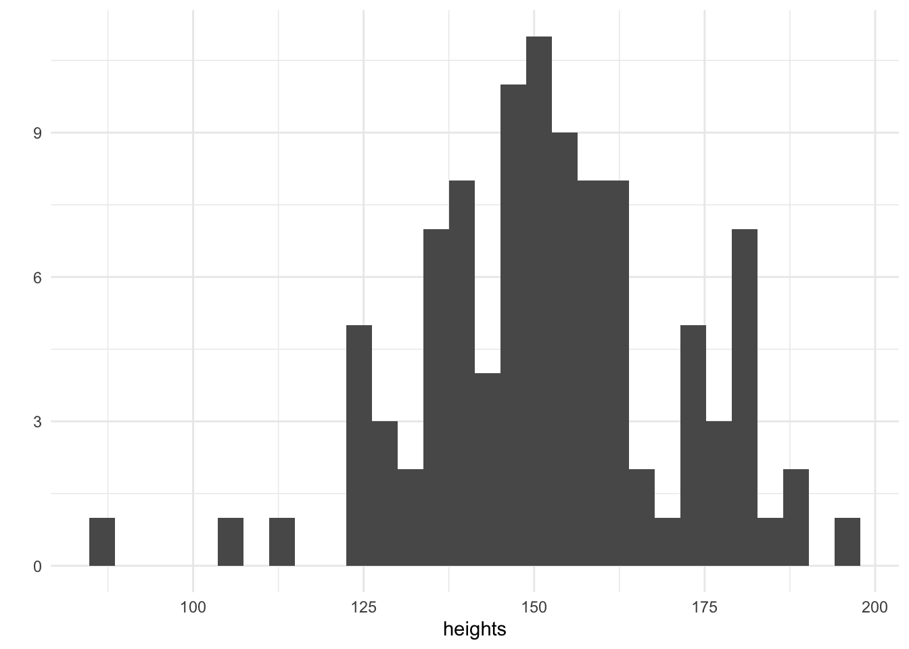
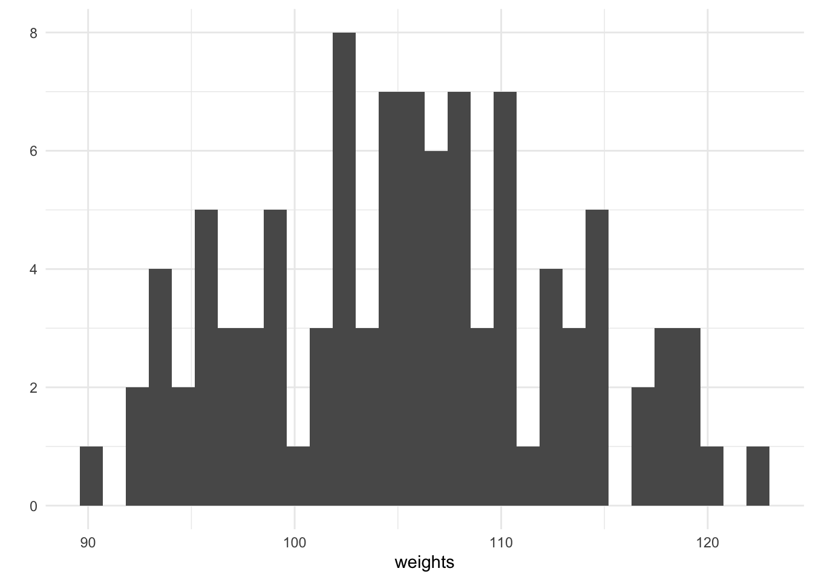
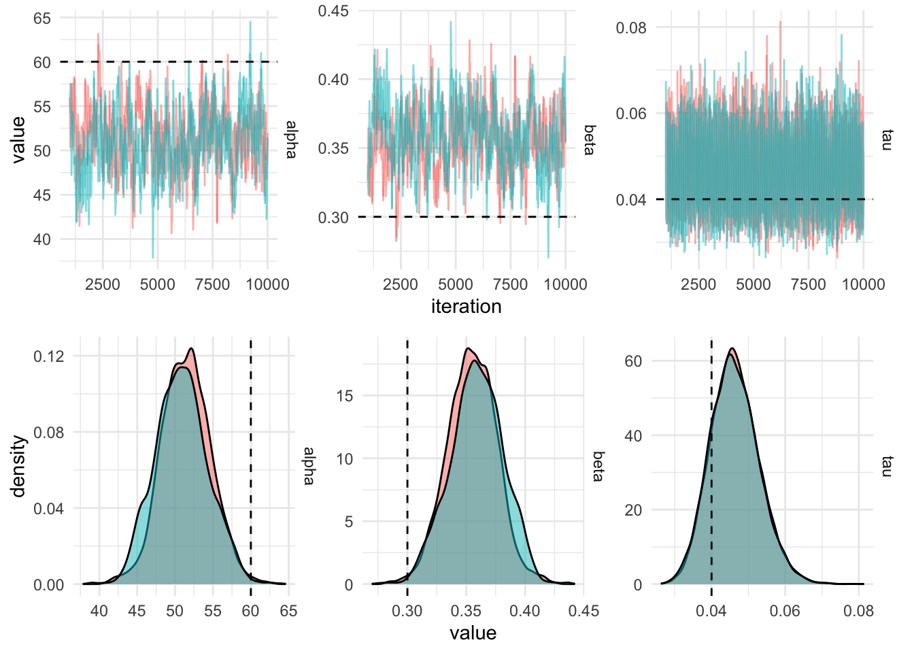
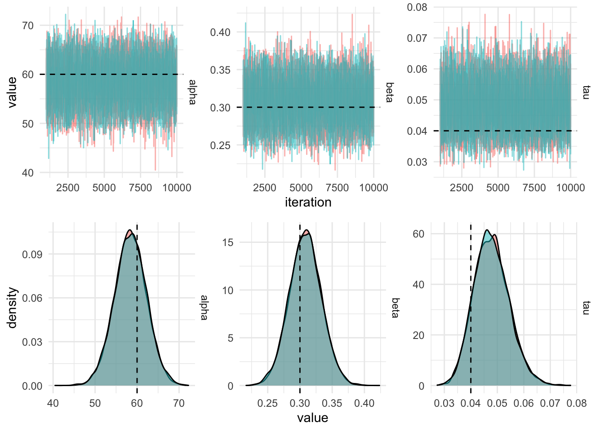
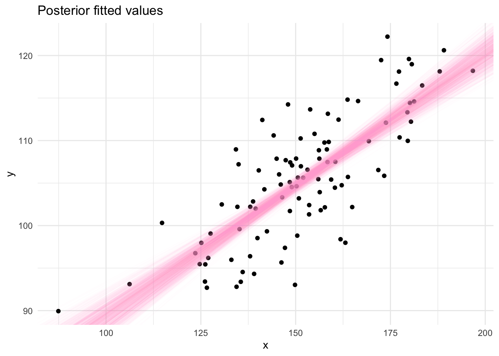

heights <- rnorm(100, mean = 150, sd = 20)
qplot(heights, geom = "histogram")
Jonny Law
June 14, 2019
Linear regression models are commonly used to explain relationships between predictor variables and outcome variables. The data consists of pairs of independent observations \((y_i, x_i)\) where \(y_i \in \mathbb{R}\) represents the outcome variable of the \(i^\text{th}\) observation and \(x_i \in \mathbb{R}^m\) represents the predictors (or covariates) of the \(i^\text{th}\) observation. The specification for this model is:
\[y_i = \alpha + x_i^T\beta + \varepsilon_i, \quad \varepsilon_i \sim \mathcal{N}(0, \sigma^2).\]
The parameters of the model include the intercept (or overall mean) \(\alpha \in \mathbb{R}\), the coefficients of the predictor variables, \(\beta \in \mathbb{R}^m\) is a \(m \times 1\) column vector and the standard deviation of the un-modelled noise, \(\sigma \in \mathbb{R}\).
In order to manufacture a deeper understand of linear regression it is useful to explore the model as a data generating process. This allows us to understand when linear regression is applicable, how to effectively perform parameter inference and how to assess the model fit. If the model is suitable for the application, then synthetic data from the model with appropriately chosen parameters should be indistinguishable from real observed data. The parameters used to generate the simulated data are known and hence inference algorithms should be able to reliably recover these parameters using the simulated data.
First consider a simple linear regression (a regression where there is only one predictor variable) which links height to weight. We assume that height will be of adults and measured in cm. This is a continuous variable and we might think that this could be modelled using a Normal distribution with a mean of \(150\) and a standard deviation of \(20\). Let’s simulate some values:
We have simulated 100 heights and plotted them on a histogram. The tallest adults are 200cm and the smallest are 100cm. Now that we have our heights, it remains to choose a suitable value for the parameter \(\alpha\) which will be the intercept and the coefficient \(\beta\) which will be multiplied by height to determine the weight in kilograms. In addition, a value of the unmodelled noise \(\sigma\) must be chosen, this seems reasonable since we know that other factors apart from height determine an individuals weight.
alpha <- 60
beta <- 0.3
sigma <- 5
weights <- purrr::map_dbl(heights, ~ rnorm(1, mean = alpha + beta * ., sd = sigma))
qplot(weights, geom = "histogram")
For every height, we have simulated an associated weight using purrrs map_dbl. We can plot the height against the weight and see that there is a generally increasing trend, this is expected since our chosen value of the coefficient \(\beta = 0.5\).
When performing an applied analysis in a business context, it might be tempting to stop here after plotting the relationship between height and weight. However these heights and weights are only a sample of a population - we wish to make statements which pertain to the entire population. If we consider the sample representative of the population then a properly fitted statistical model will allow us to make statements about the population which this sample is drawn from. As an example of a common business problem, this could include sales of a product - we wish to make statements about future sales which we can’t possibly have seen and hence a statistical model is important.
A parametric model is described by a distribution \(p(y|\theta)\) where \(y\) represents the observed data and \(\theta\) represents the parameters. These parameters are unknown, but represent properties of the model. The distribution of the observed data is controlled by the values of the parameters, \(\theta\). The goal of Bayesian inference is to learn which values of the parameters are consistent with the observed data. The parameters are unknown and can’t be determined precisely, however the more data collected the more accurate the posterior inferences can be.
In the Bayesian paradigm, the parameters also have a distribution. Before the data is observed, this is referred to as the prior distribution \(p(\theta)\) which can incorporate the hypothesis of the analyst. The goal is to determine the posterior distribution of the parameters given the observed data, this can be achieved using Bayes theorem:
\(p(\theta|y) = \frac{p(\theta)p(y|\theta)}{\int_\theta p(\theta)p(y|\theta)d\theta}\)
The likelihood for linear regression with \(n\) univariate observations, \(\textbf{y} = y_1,\dots,y_n\) is written as
\[p(\textbf{y}|\psi) = \prod_{i=1}^n\mathcal{N}(\alpha + x_i^T\beta, \tau),\]
note that the likelihood is parameterised in terms of the precision \(\tau = \frac{1}{\sigma^2}\). Standard prior distributions for simple linear regression are chosen to be
\[\begin{align*} p(\tau) &= \textrm{Gamma}(\alpha_\sigma, \beta_\sigma), \\ p(\alpha) &= \mathcal{N}(\mu_\alpha, \sigma^2_\alpha), \\ p(\beta) &= \mathcal{N}(\mu_\beta, \sigma^2_\beta). \end{align*}\]
Gibbs sampling works by alternately sampling from the conditional conjugate distribution. It can often be faster for models which are specified using the conjugate structure, however the choice of prior distribution is not flexible (but the parameterisation is). The algebra below is not required to implement a Gibbs sampling algorithm as there are probabilistic programming languages such as BUGS and JAGS which work out the required maths.
Using the likelihood and priors from the section above we can derive the conditionally conjugate posterior distributions:
$$\[\begin{align*} p(\tau|\textbf{y}, \textbf{x}, \beta, \alpha) &= p(\tau)\prod_{i=1}^np(y_i|\psi), \\ &= \textrm{Gamma}(\tau|\alpha_\sigma, \beta_\sigma)\prod_{i=1}^n\mathcal{N}(y_i|\alpha + x_i^T\beta, \sigma^2), \\ &\propto \tau^{\alpha_\tau-1}e^{-\beta_\tau\tau}\tau^{\frac{n}{2}}\exp\left\{-\frac{\tau}{2}\sum_{i=1}^n(y_i-\alpha - x_i^T\beta)^2\right\}, \\ &= \tau^{\alpha_\tau-1 + \frac{n}{2}}\exp\left\{-\beta_\tau\tau-\frac{\tau}{2}\sum_{i=1}^n(y_i-\alpha - x_i^T\beta)^2\right\},\\ &=\textrm{Gamma}\left(\alpha_\tau+\frac{n}{2}, \beta_\tau +\frac{1}{2}\sum_{i=1}^n(y_i-\alpha - x_i^T\beta)^2\right). \end{align*}\]$$
\[\begin{align*} p(\alpha|\textbf{y}, \textbf{x}, \beta, \tau) &= \mathcal{N}(\alpha|\mu_\alpha, \tau_\alpha)\prod_{i=1}^n\mathcal{N}(y_i|\alpha + x_i^T \beta, \tau), \\ &\propto \tau^{\frac{1}{2}}_\alpha\exp\left\{-\frac{\tau_\alpha}{2}(\alpha-\mu_\alpha)^2\right\}\tau^\frac{n}{2}\exp\left\{-\frac{\tau}{2}\sum_{i=1}^n(y_i-\alpha-x_i^T \beta)^2\right\}, \\ &= \exp\left\{-\frac{\tau_\alpha}{2}(\alpha-\mu_\alpha)^2-\frac{\tau}{2}\sum_{i=1}^n(y_i-\alpha-x_i^T \beta)^2\right\}, \\ &= \exp \left\{ -\frac{1}{2}\left(\alpha^2(\tau_\alpha + n\tau) + \alpha(-2\tau_\alpha\mu_\alpha - 2\tau\sum_{i=1}^n (y_i - x_i^T \beta)) \right) + C \right\}, \\ &= \mathcal{N}\left((\tau_\alpha + n\tau)^{-1}\left(\tau_\alpha + \tau\sum_{i=1}^n (y_i - x_i^T \beta)\right), \tau_\alpha + n\tau\right). \end{align*}\]
$$\[\begin{align*} p(\beta|\textbf{y}, \textbf{x}, \alpha, \tau) &= \mathcal{N}(\beta|\mu_\beta, \tau_\beta)\prod_{i=1}^n\mathcal{N}(y_i|\alpha + x_i^T \beta, \tau), \\ &\propto \tau^{\frac{1}{2}}_\beta\exp\left\{-\frac{\tau_\beta}{2}(\beta-\mu_\beta)^2\right\}\tau^\frac{n}{2}\exp\left\{-\frac{\tau}{2}\sum_{i=1}^n(y_i-\alpha-x_i^T \beta)^2\right\}, \\ &= \exp\left\{-\frac{\tau_\beta}{2}(\beta-\mu_\beta)^2-\frac{\tau}{2}\sum_{i=1}^n(y_i-\alpha-x_i^T \beta)^2\right\}, \\ &= \exp \left\{ -\frac{1}{2}\left(\beta^2(\tau_\beta + \tau\sum_{i=1}^nx_i^2) + \beta(-2\tau_\beta\mu_\beta - 2\tau\sum_{i=1}^n (y_i - \alpha) x_i) \right) + C \right\}, \\ &= \mathcal{N}\left((\tau_\beta + \sum_{i=1}^nx_i^2\tau)^{-1}\left(\tau_\beta + \tau\sum_{i=1}^n (y_i - \alpha )x_i\right), \tau_\beta + \tau\sum_{i=1}^nx_i^2 \right). \end{align*}\]$$
This allows us to construct a Gibbs Sampler for the linear regression model by alternating sampling from the precision, \(\tau\) given the latest value of the coefficient vector \(\beta\) and vice versa. The functions to sample from the conditional posterior distributions are written in R as:
sample_tau <- function(ys, alpha, beta, alpha0, beta0) {
rgamma(1,
shape = alpha0 + nrow(ys) / 2,
rate = beta0 + 0.5 * sum((ys$y - (alpha + as.matrix(ys$x) %*% beta))^2)
)
}
sample_alpha <- function(ys, beta, tau, mu0, tau0) {
prec <- tau0 + tau * nrow(ys)
mean <- (tau0 + tau * sum(ys$y - as.matrix(ys$x) %*% beta)) / prec
rnorm(1, mean = mean, sd = 1 / sqrt(prec))
}
sample_beta <- function(ys, alpha, tau, mu0, tau0) {
prec <- tau0 + tau * sum(ys$x * ys$x)
mean <- (tau0 + tau * sum((ys$y - alpha) * ys$x)) / prec
rnorm(1, mean = mean, sd = 1 / sqrt(prec))
}Then a function which loops through each conditional distribution in turn is defined using the three functions defined above. Each conditional distribution is dependent on the parameter draw made immediately above.
gibbs_sample <- function(ys,
tau0,
alpha0,
beta0,
m,
alpha_tau,
beta_tau,
mu_alpha,
tau_alpha,
mu_beta,
tau_beta) {
tau <- numeric(m)
alpha <- numeric(m)
beta <- numeric(m)
tau[1] <- tau0
alpha[1] <- alpha0
beta[1] <- beta0
for (i in 2:m) {
tau[i] <-
sample_tau(ys, alpha[i - 1], beta[i - 1], alpha_tau, beta_tau)
alpha[i] <-
sample_alpha(ys, beta[i - 1], tau[i], mu_alpha, tau_alpha)
beta[i] <- sample_beta(ys, alpha[i], tau[i], mu_beta, tau_beta)
}
tibble(iteration = seq_len(m),
tau,
alpha,
beta)
}
In order to get this chain to mix better, the predictor (the height, \(x\)) can be centered by subtracting the mean. This will result in the intercept being higher than when using the untransformed data, since the outcome variable (the weight, \(y\)) is not transformed. In order to recover the value of the parameter
gibbs_sample_centered <- function(ys,
tau0,
alpha0,
beta0,
m,
alpha_tau,
beta_tau,
mu_alpha,
tau_alpha,
mu_beta,
tau_beta) {
tau <- numeric(m)
alpha <- numeric(m)
beta <- numeric(m)
tau[1] <- tau0
alpha[1] <- alpha0
beta[1] <- beta0
mean_x = mean(ys$x)
ys$x = ys$x - mean_x
for (i in 2:m) {
tau[i] <- sample_tau(ys, alpha[i - 1], beta[i - 1], alpha_tau, beta_tau)
alpha[i] <- sample_alpha(ys, beta[i - 1], tau[i], mu_alpha, tau_alpha)
beta[i] <- sample_beta(ys, alpha[i], tau[i], mu_beta, tau_beta)
}
tibble(
iteration = seq_len(m),
tau,
alpha = alpha - mean_x * beta,
beta
)
}iters_centered %>%
filter(iteration > 1000) %>%
gather(key = "parameter", value, -chain, -iteration) %>%
plot_diagnostics_sim(actual_values)
The draws from the Gibbs sampling algorithm are draws from the posterior distribution which can be used to produce summaries required for inference using the linear model. Posterior fitted values, ie. a straight line, can be plotted by sampling pairs of values (\(\alpha, \beta\)) from the MCMC output and plotting them using the equation of a straight line (\(y = \alpha + \beta x\)). This gives an indication of the uncertainty in the parameter estimates.

@online{law2019,
author = {Jonny Law},
title = {Bayesian {Linear} {Regression} with {Gibbs} {Sampling} in
{R}},
date = {2019-06-14},
langid = {en}
}